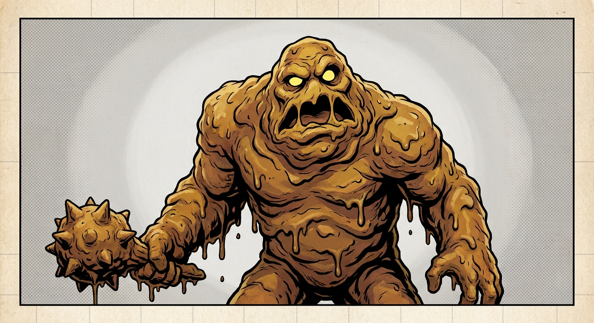
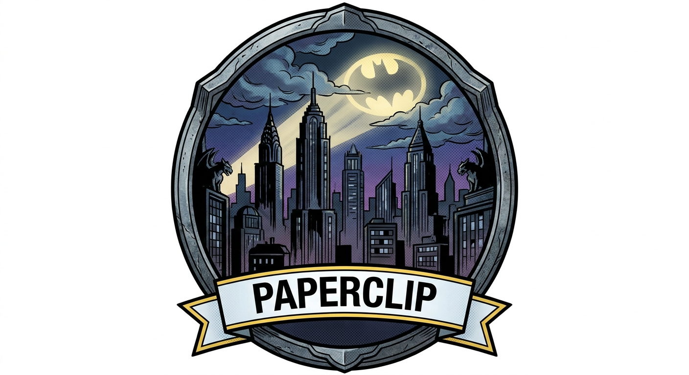
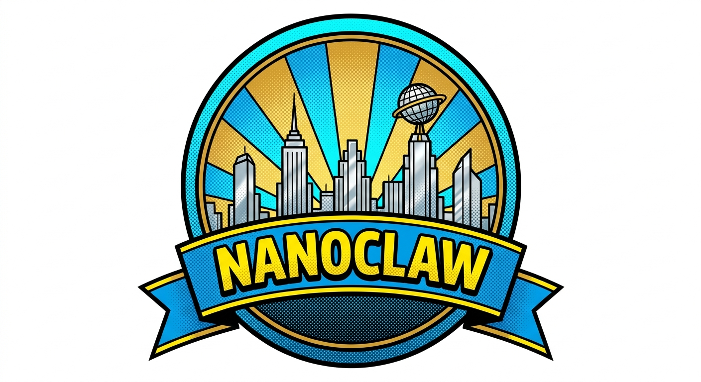
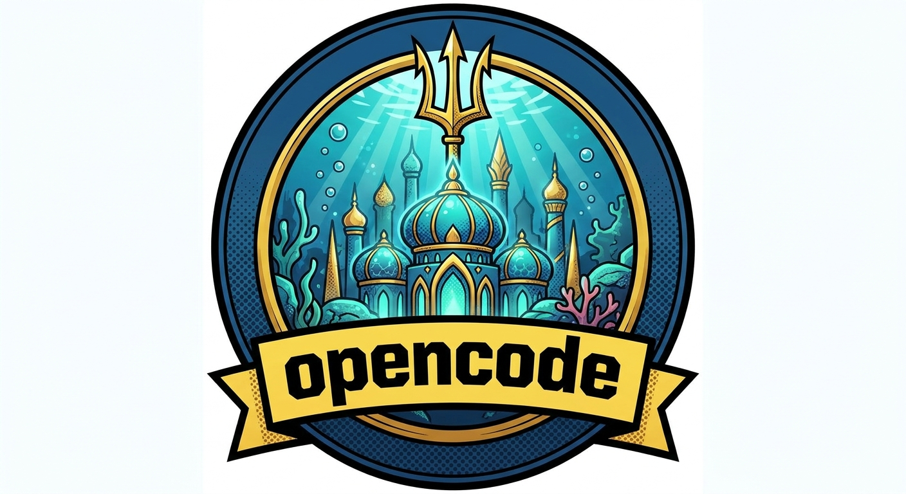
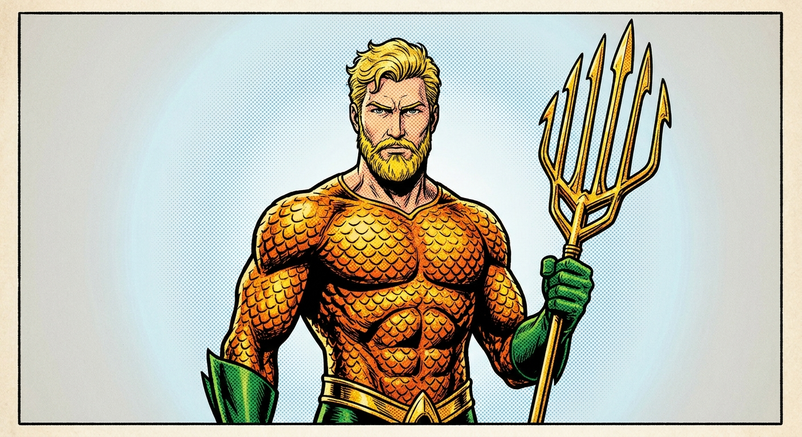
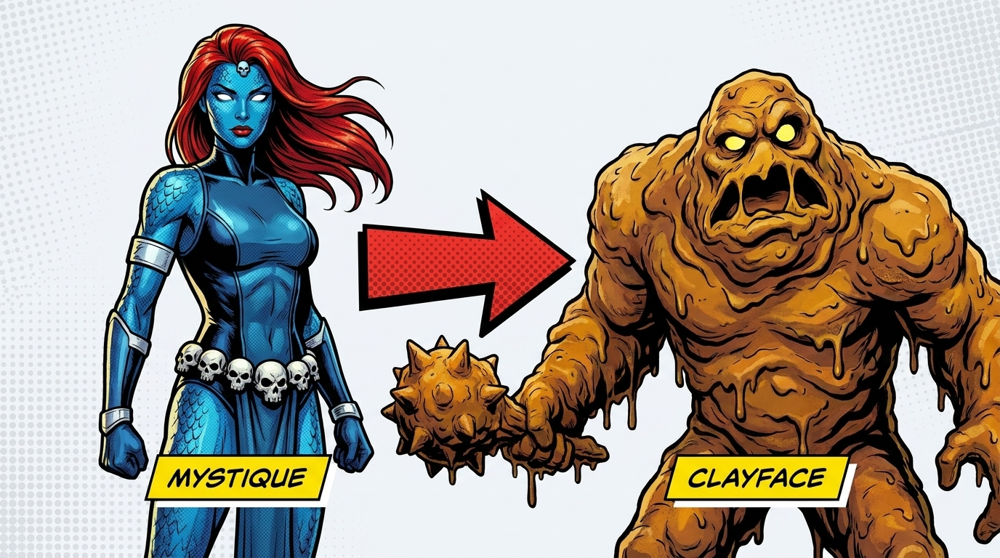
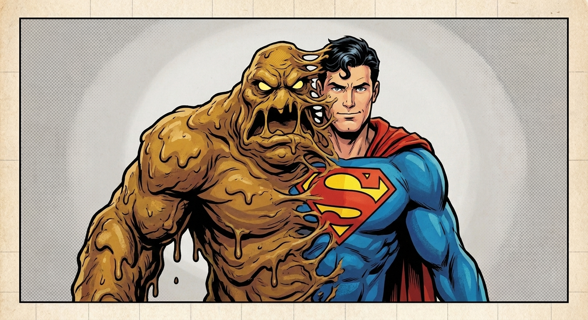
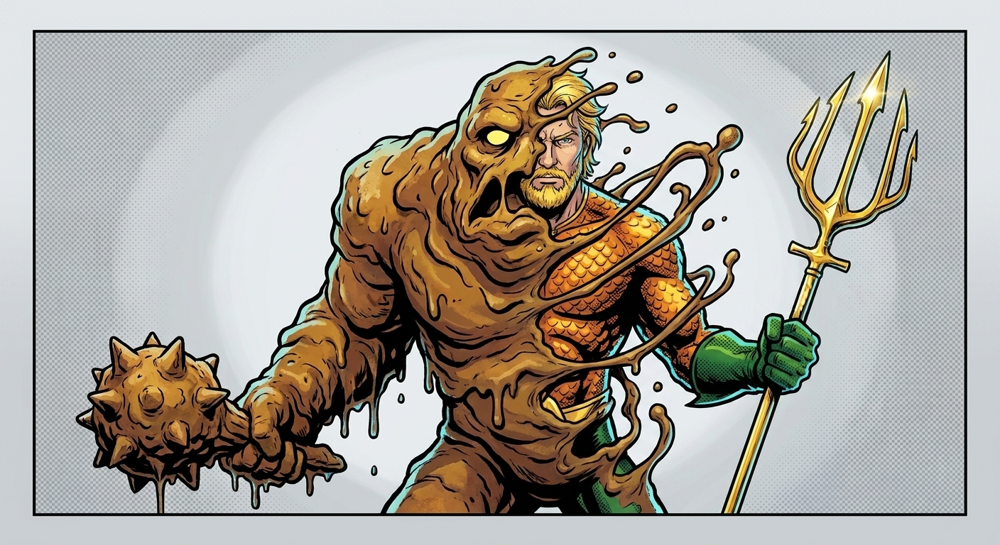
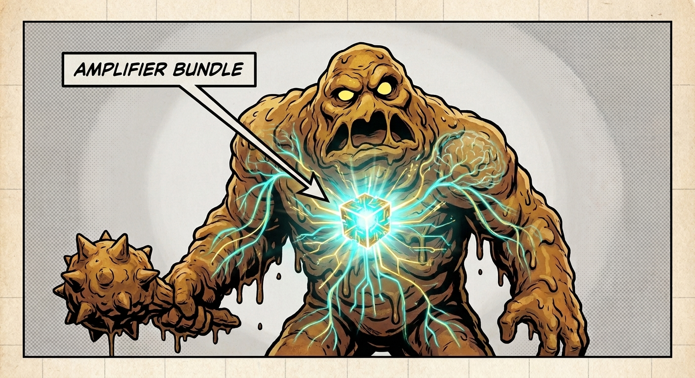

bundleDigest. Identical behavior regardless of which wrapper invoked it.A field guide for host integrators
One agent. Three hosts. No bespoke heroes — because we shipped a shape-shifter.



AgentProvider. Native costume: bright, always-on, multi-turn. Reply-channel via MCP.

Key point: Each host has a real native shape it expects. paperclip wants a Node-side SDK that spawns subprocesses. nanoclaw wants an in-container provider that yields ProviderEvents. opencode wants whatever opencode's integration model becomes. Three hosts, three native idioms — three completely different "Batman / Superman / Aquaman" looks.
If challenged: "Aren't these all just APIs?" At the shape level, yes. At the lifecycle, type system, error idiom, streaming model, and packaging level, no. Shipping three bespoke "providers" is real work — three release cadences, three test matrices, three sets of bugs at the seam.
Transition: The trap isn't that the hosts are different. It's that the temptation to ship a separate hero for each one is enormous — and that's what doesn't scale.
Confidence: High — host shapes documented in the wrapper-and-wire design (2026-05-20) and amended in the Mode-A pivot (2026-05-24).
⚡ Heroes don't scale ⚡
Every new host means a new agent codebase: a new package, new install path, new wire, new error taxonomy, new approval model. By host #4 you're maintaining four agents that disagree about what an agent is — and the bug surface is the cross-product.
Key point: The cost isn't just "build N agents" — it's that the N agents diverge. Different bundles, different model selection, different approval semantics. The host author has to learn a new mental model every time, and a bug fixed in one never reaches the others.
If challenged: "Couldn't you just share a library?" That's exactly the move — but the library has to know how to present as each host's expected shape. Which is the entire pivot of this design.
Transition: So we don't ship N heroes. We ship one shape-shifter. To make the analogy land for the non-DC audience, here's the bridge.
Confidence: High — the 4-host runway (NanoClaw, Paperclip, OpenCode, Claude Code) is the explicit framing of the Mode-A pivot amendment §1.

Same archetype, different publisher. From here on: Clayface.
Key point: This is a one-shot disambiguation slide. Both Mystique and Clayface are shape-shifters; the archetype is what matters, not the publisher. Don't dwell — just land the joke and move on.
Transition: Now that everyone's mapped, meet the actual protagonist of this deck.
Confidence: N/A — analogy bridge, not a technical claim.
★ Anti-hero, lean in ★
Clayface is the shape; the host sees its expected native hero. The substance doesn't change — only the costume the host can integrate against.
Key point: The villain framing is deliberate. Shape-shifters in fiction are unsettling because the audience can't trust what they see — but in integration, that's the feature. The host's adapter author sees a native idiom they already know how to consume. They never have to "trust the substance" because the substance is identical regardless of which costume they're looking at.
If challenged: "Doesn't a shape-shifter break debuggability?" Inverted — every form emits the same JSON envelope (protocol 0.2.0), so an operator debugging in any host is debugging the same wire. The form changes; the trace doesn't.
Transition: Let's see the three morphs side by side — the punchline of the whole metaphor.
Confidence: High — the wrapper/CLI surface is explicit in README §"Architecture at a glance" and in the wrapper-and-wire design §3.
The amplifier-agent-ts npm package. A typed Node SDK. spawnAgent({ lifecycle: 'one-shot' }).submit(prompt).
Inside the host's Node process. Spawns the engine per call. Returns an AsyncIterable<DisplayEvent>.

An in-container AgentProvider implemented on top of the same TS wrapper. Yields the ProviderEvent shape NC's poll-loop already consumes.
Inside the agent-runner. One subprocess per turn. MCP servers passed via --mcp-servers argv.

A Python wrapper (or the raw CLI). Any host that can spawn a subprocess gets a costume — no SDK required.
Wherever opencode wants. The CLI is the universal adapter. The envelope on stdout is the only contract.
Key point: The morph is just which wrapper the host imports — and ultimately, every wrapper drives the same Python CLI underneath. paperclip imports amplifier-agent-ts. nanoclaw imports the same wrapper inside its container. opencode either imports the Python wrapper or shells out to the CLI directly. Same engine, same bundle, same envelope.
If challenged: "How is this different from any SDK with multiple language bindings?" Two things: (1) the wrappers are intentionally thin — no business logic, just subprocess driving and typed parse. (2) The contract is the JSON envelope on stdout, not the language API. A host can bypass every SDK and shell out directly.
Transition: The morph happens at the layer above the CLI. Let me show you the stack.
Confidence: High — wrappers live at wrappers/typescript/ and wrappers/python/; CLI at src/amplifier_agent_cli/.
Each host integrates against a wrapper that looks native to it. The wrapper is thin — it spawns the CLI, passes argv, parses one JSON envelope.
Below the CLI, everything is identical across hosts. Same engine library. Same baked-in bundle. Same protocol version. The form changes; the brain is one brain.
Key point: This is the architectural assertion of the whole deck. The wrapper is the morphing membrane. It's thin enough that it's not really "business logic" — it's argv assembly and envelope parsing. So when a new host appears, you write a new wrapper without touching the engine, the bundle, or the protocol.
If challenged: "Then why have wrappers at all? Just publish the CLI." Because the host author wants an idiomatic API in their language with typed errors, an AsyncIterable of events, and a clean approval handler shape. The wrapper gives them that without forking the engine.
Transition: But here's the thing — the morph is skin-deep. What actually does the work?
Confidence: High — the layering is documented verbatim in README §"Architecture at a glance".

★ Heart and brain ★
The baked-in Amplifier bundle carries the kernel, the context module, the tool-MCP mount, the approval hooks, the LLM provider routing. Every wrapper, every host, every morph — they all run the same bundle. The skin you see is just integration.
Key point: This is the architectural punchline. The reason morphing works at all is that there's nothing host-specific in the substance. The bundle is fully baked-in to the engine binary — when you uv tool install amplifier-agent, you get the engine plus the bundle plus a prepared cache. There's no host-supplied agent definition. The bundle is the agent.
If challenged: "Doesn't a baked-in bundle limit flexibility?" The bundle is opinionated on purpose. Hosts that want to extend it pass --mcp-servers and --host-capabilities as argv — those are the documented seams. The kernel/context/approval triad inside is not a seam, and that's how we keep behavior consistent across hosts.
Transition: So what's actually in the bundle?
Confidence: High — bundle composition in the 2026-05-19 baked-in-bundle decision and the Mode-A pivot §1.5.
Holds the turn transcript. On --resume, replays prior messages from the session store. Per-session, not per-process.
→ session continuity
Mounts MCP servers at turn start. Hosts pass servers via --mcp-servers argv (or @path tmpfile when env-secrets are present).
→ host capabilities
Gates tool calls. Bundle-layer policy: auto-approve, prompt, or deny. CLI -y/-n overrides; wrappers default to auto-allow.
→ safety surface
Auto-detects Anthropic, OpenAI, Azure, or Ollama from env vars. Override with --provider. No settings.yaml to maintain.
→ model access
Key point: Four modules, each owning one concern. Context handles state. Tool-MCP handles host capability injection. Hooks-approval handles policy. Provider routing handles model access. The whole bundle is small enough that you can hold it in your head — and that's why "morphing the wrapper" works without leaking complexity into hosts.
If challenged: "Why bake the bundle in instead of letting hosts supply it?" The 2026-05-19 baked-in-bundle decision argued exactly this: shipping a single coherent agent makes the cross-host behavior predictable. Hosts that need to customize do it through documented seams (MCP, capabilities, provider), not by swapping context modules.
Transition: The wrapper invokes this bundle the same way every time — through one CLI, one wire, one envelope. Here's what that wire looks like.
Confidence: High — bundle composition in src/amplifier_agent_lib/bundle/ and design docs 2026-05-19 + 2026-05-24 §1.5.
# the wrapper assembles. one subprocess per turn. amplifier-agent run \ --session-id chat-42 \ --resume \ --protocol-version 0.2.0 \ --mcp-servers @/run/.../mcp.json \ --host-capabilities '{"supports_steering":false}' \ --output json \ -y \ "What did I say my favorite color was?"
{
"protocolVersion": "0.2.0",
"sessionId": "chat-42",
"turnId": "turn-2",
"reply": "You said blue.",
"error": null,
"metadata": {
"tokensIn": 1247,
"tokensOut": 89,
"durationMs": 1832,
"bundleDigest": "sha256:7f3a9e…",
"engineVersion": "0.3.0",
"correlationId": "01HX…"
}
}
Diagnostics → stderr. Envelope → stdout, exactly one document. Multi-turn = the wrapper spawns again with --resume. That's the entire contract.
Key point: This is what makes the morphing trick cheap. The contract is a CLI invocation and a JSON document. Any language, any host, any environment that can spawn a process and parse JSON can drive amplifier-agent. The TS and Python wrappers exist to give you typed ergonomics — but the wire underneath is small enough to implement in an afternoon if you needed to.
If challenged: "What about streaming? What about mid-turn approval prompts?" Deferred to v1.x. The Mode-A pivot amendment explicitly elected to ship a one-shot wire because no v1 host consumes streaming events or live approval round-trips. They're tracked as deferral nominees, not gaps.
Transition: If this wire looks austere, it's because it used to be ambitious. The story of how it shrank is the next slide.
Confidence: High — schema verbatim from Mode-A pivot amendment §4.1; CLI surface from amendment §3.1; current implementation in src/amplifier_agent_cli/modes/single_turn.py.
agent/initialize handshake on first framedisplay/event stream of 9 event typesapproval/request round-tripJsonRpcClient openCritical path: ~31 days · 8 weeks
{type:'activity'} heartbeatsCritical path: ~10 days · 3 weeks
Key point: The Mode-A pivot is a worked example of "audit what consumers actually use before locking the contract." Mode B was specified for capabilities (granular event streaming, mid-turn approval round-trips) that none of the four v1 hosts — NanoClaw, paperclip, opencode, Claude Code — actually consume. We verified that in the DTU and pivoted. The pivot deleted code, sped up critical path 2–3×, and made the wire match what the hosts already speak.
If challenged: "Doesn't this lock you out of streaming forever?" No — the deferral nominees are tracked: --output streaming-json for granular events; out-of-band or webhook callbacks for live approval. They get promoted the moment a host needs them. The wire is versioned and the wrappers preserve the typed surface.
Transition: So that's the wire. Let me bring the architecture together visually with how Clayface actually lands inside a host.
Confidence: High — Mode-A pivot amendment §1 executive summary; LOC and timeline deltas in §8.3 critical path.
bundleDigest. Identical behavior regardless of which wrapper invoked it.--protocol-version; engine self-validates.--session-id + --resume for continuity. Cancel = SIGTERM the process group.--mcp-servers for tools, --host-capabilities for flags, env vars for provider. Nothing else.Key point: These four invariants are how the morph actually works in practice. The host doesn't get to fork the engine, swap the bundle, or invent a new wire. It customizes through three argv-borne seams and gets a typed wrapper API on top. Every host integration converges on the same execution path, which is what makes operating a fleet of them sane.
If challenged: "What if a host needs something none of those four seams cover?" That's a v1.x conversation. The amendment documents the deferral nominees and the promotion triggers. We add a flag, not a fork.
Transition: So if you ship this, what changes for the team?
Confidence: High — invariants enumerated across README, the wrapper-and-wire design D1–D12, and the Mode-A amendment §2.
One engine, one bundle, one wire. A bug fix lands in one place; every host benefits. Cross-host behavior is the same execution path.
A new host writes a thin adapter on top of the existing wrapper. No new engine code. No new wire. Most work is shape-mapping to its event taxonomy.
Every turn emits a correlationId + audit file. One forensic format across all hosts. Greppable wherever the agent ran.
Key point: The promise of Clayface isn't aesthetic — it's operational. When you collapse N agent codebases to one, you collapse N test suites, N release cadences, and N forensic formats. The host integrators get a typed SDK that looks idiomatic. The operators get one trace shape across every host. That's the whole proposition.
If challenged: "Is the ~3-week onboarding number real?" Conservative read of the Mode-A amendment migration plan: NanoClaw adapter rebuild is estimated at ~3 working days against the wrapper. The first host costs more because the bundle behavior has to be validated end-to-end. From host #2 onward, the cost is just shape-mapping.
Transition: The action.
Confidence: Medium-high — onboarding estimate from Mode-A amendment §8.2 N1'–N4' (~3 days); generalization to other hosts is a directional claim.
The call
Pick a wrapper. Spawn the CLI. Read the envelope. The bundle does the rest — and it's the same bundle wherever you stand.
Key point: The ask is concrete. If you're a host integrator, install the engine, import the wrapper for your language (or shell out directly), and you have a working agent against your host's shape today. We are not asking for buy-in to an architecture — we're asking you to run one command and read one JSON document.
If challenged: "What's the catch?" Two known: (1) cold-start cost is per-turn (we monitor it); (2) mid-turn streaming and live approval prompts are v1.x. If neither matters to your host's UX cadence, you're unblocked.
Transition: Questions about the wire, the bundle, or how to land a new host integration.
Confidence: High — install command verbatim from README §Install.